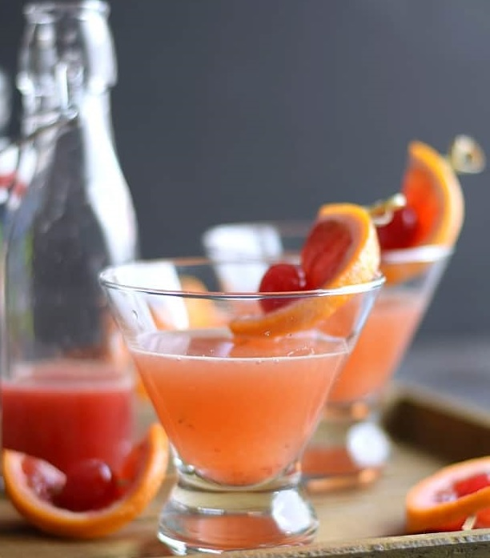
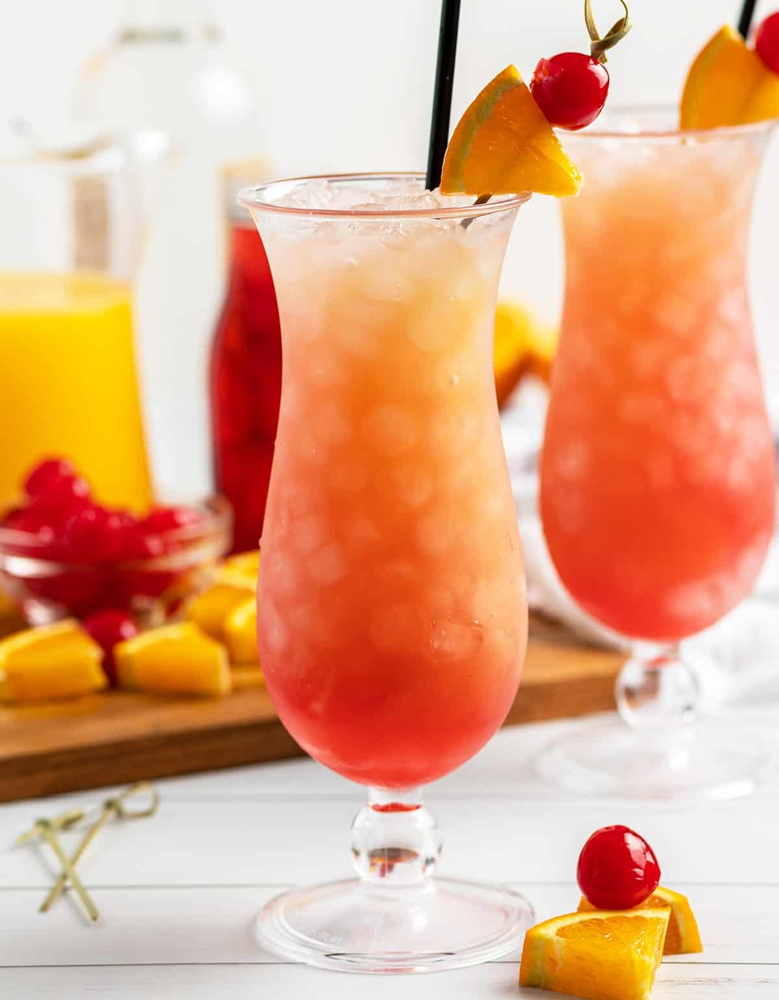

Alcohol
25% ABV
Real blood orange, dragonfruit, pineapple and pear, infused into vodka. Beets give it the rosy color you can see through the glass. No sugar. No preservatives. Nothing artificial.

Each is a real fruit or vegetable, infused in. No flavorings, no concentrate, no extract.
“What you see in it is the fruits and vegetables.” Rolesha Brown, founder
Most flavored vodkas lean on added sugar and lab-made flavoring. Sukari doesn't. The flavor comes from the fruit, the color comes from the beet, and the list of what we leave out is as plain as the list of what we put in.
It also reads clean across the board: vegan, gluten-free, GMO-free, and Kosher certified. The label is the whole story.
No burn going down, and people tell us no hangover after. That's the part that surprises first-timers: it drinks easy on its own, but it's a true 50-proof spirit.

It works neat, and it works in a glass. The coral color carries; you do not need much else.




The infusion does the heavy lifting, so a Sukari pour holds up neat and gives a bartender a clean base to work from. The color carries from the bottle into the glass.
“You can drink it straight and it tastes like a fruity drink, but you're actually drinking vodka.” Rolesha Brown, founder
Four marks from independent spirits competitions. We list exactly what was awarded, and nothing more.


Sukari was created by Rolesha “Ro” Brown, a service-disabled veteran and single mother who taught herself the spirit business and made the first fruit-and-vegetable infused vodka in the category.
The bottle is hers too. The curve and the cutout are drawn from a woman's silhouette, and the phoenix forming the S stands for starting over.
Available in the 750ml bottle and the 375ml flask. Order direct, or find it at a shop or bar near you.